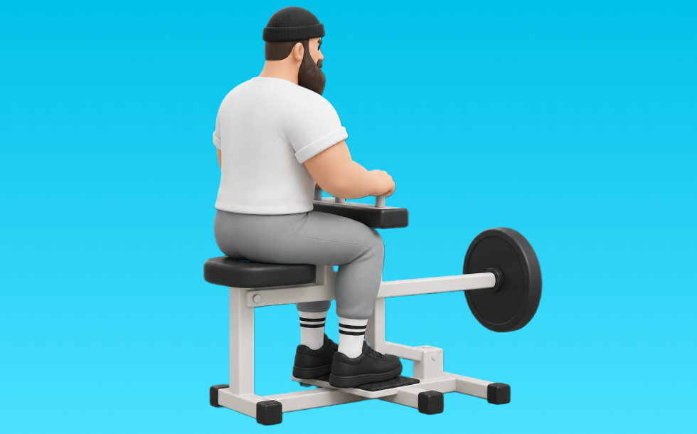

シーテッドカーフレイズ

シーテッドカーフレイズとは、マシンを使って「つま先立ちする」動作でふくらはぎ（腓腹筋、ヒラメ筋）を鍛える種目です。軌道が安定して狙った部位に効かせやすいのが特徴で、かかとを下ろしてから高く上げる動作を繰り返します。ふくらはぎのボリュームアップや足首の安定が期待できます。
- 対象部位
- 脚
- 器具
- マシン
- 記録形式
- 重量・回数
- 別名
- 座位カーフ
YouTube動画
-
ふくらはぎを鍛える『シーテッドカーフレイズ』のやり方を解説します◎
-
【筋トレ】かっこいい脚を手に入れる最強のトレーニング、カーフレイズの注意点とは【脚トレ】
-
【自宅で簡単】シーテッドカーフレイズ！ふくらはぎに効くコツ〜ダンベルの重量設定まで解説！
-
【筋トレ】シーテッドカーフレイズ 解説講座 【フォーム】【初心者】
-
徹底解説シリーズ05 鈴木雅が「シーテッドロウイング」を伝授
-
足のアーチ機能を高めるならこれ！シーテッドカーフレイズ
-
ふくらはぎを鍛える自重筋トレ！【ヒラメ筋トレーニング/カーフレイズ】（3分）
-
【脚トレ】ふくらはぎをデカくしたいならこれをやれ！カーフが成長する最強種目3つと方法について徹底的に解説します【筋トレ】
YouTubeショート
-
シーテッドカーフレイズ（Seated Calf Raise）のやり方とフォーム
-
シーテッド・カーフレイズ／ヒラメ筋（ふくらはぎ）／筋トレ実践講座
-
【シーテッド・カーフレイズの正しいやり方】ヒラメ筋を鍛え上げる｜Training Movie 100｜Tarzan Web
-
シーテッドカーフレイズ
-
【SGIR】ジョージとSamと学ぶカーフレイズのポイント
-
足が速くなりたいなら、これを鍛えるのを忘れないでください #陸上#足が速くなる
-
絶対買うべき筋トレ器具 #筋トレ #ホームトレーニング #トレーニング #筋肉 #ホームトレーニー #ボディビル #フィジーク
-
【筋肉つかない】自重トレ3種目 #自重トレーニング #筋トレ #フィットネス
-
カーフレイズ#筋トレ
-
シーテッドカーフレイズ&トゥレイズ
-
シーテッドカーフレイズの特徴と注意点【糸井トレーナー】
-
【ふくらはぎを鍛える！】シーテッドカーフレイズ
-
【血行促進】むくみ対策に！ふくらはぎを鍛える「カーフレイズ」 #shorts #ふくらはぎ #血行促進 #むくみ解消 #ストレッチ #カーフレイズ #マッサージ
-
自己ベスト80kgなるか、、、？ #Shorts #筋トレ女子 #ベンチプレス
-
ダイエットにお勧め！レッグプレスで鍛え分ける！ #shorts
-
【勘違いしちゃだめ！】自重トレは筋肉を大きくするためのトレーニングではないよ！
-
ジュラシック木澤が45度レッグプレスに対して思ってる子事
-
レッグプレス300kg#shorts#筋トレ
-
カーフレイズ使い方 (ふくらはぎ)
-
【万代店】シーテッドカーフ 使い方動画
-
腹筋を最大限に鍛える種目３選【筋トレ】
-
【筋トレ解説】カーフレイズ2種目で腓腹筋とヒラメ筋を鍛える！#脚トレ #カーフレイズ #ふくらはぎ #筋トレ #ボディビル #破壊 #wbd
-
ジムあるある、最初みんなつまずくよねw #shorts
-
両脚ベントニー・カーフレイズ（骨盤ごと動かす）シューズオフ
-
【忙しい人向け】30分で終わる脚トレ#shorts #youtubeshorts #筋トレ大学 #筋トレ #脚トレ
-
ふくらはぎの筋トレ！エアーカーフレイズ。ふくらはぎが発達しないトレーニー必見。#筋トレ教育チャンネル
-
【フォームローラーふくらはぎストレッチ】 #ダイエット #ストレッチ #フォームローラー #新座市 #朝霞市 #志木市 #パーソナルジム ふくらはぎストレッチ
-
【ダンベル】脚トレ３選
-
脚トレはランジ。#脚トレ #トレーニング #ジム #脚痩せ #ダイエット #フィジーク #筋トレ
-
レッグプレスやってる？#筋トレ #脚トレ
動作方法
- 足幅を決め、体幹を固める
- 股関節と膝を同時に曲げて下ろす
- 足裏全体で床を押して立ち上がる
動作ポイント
- 膝とつま先の向きをそろえる
- 胸を落としすぎない
- かかとを浮かせない
ワンポイントアドバイス
- ウォームアップで股関節と足首を動かす
- 高重量の日はセーフティ設定を確認する
目的別回数設定
目的や体力に応じた一般的な目安です。無理のない範囲で調整してください。
- 筋力アップ
- 1〜5回
- 筋肥大
- 6〜12回
- 持久力アップ
- 13〜20回
YouTube動画について
動画はYouTubeの公開情報をもとに表示しています。内容は投稿者によるもので、Biggrによる監修ではありません。
アプリを入手
筋トレやトレーニングの記録はBiggrにお任せください。今すぐ無料で使い始められます。